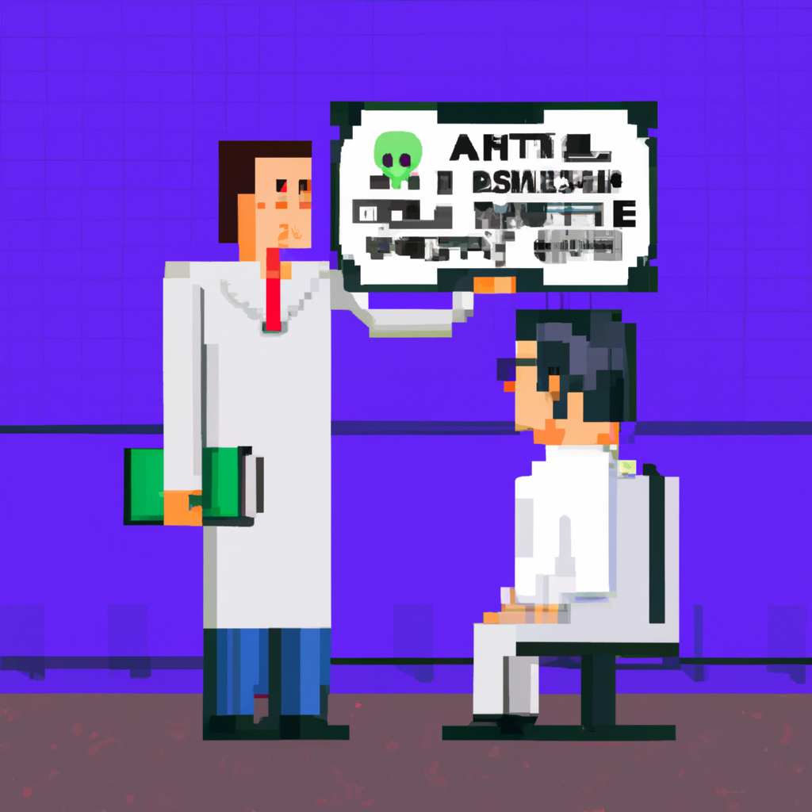

Why AI will never replace the radiologist
AI and machine learning have been making waves in the healthcare industry for quite some time now. With the help of machine learning, many healthcare organizations have been able to automate some of their processes, from diagnosis to prescribing treatments. But one field where machine learning has been slow to make an impact is radiology.
Radiology is a complex field, requiring an understanding of the anatomy and physiology of the human body and the interaction between the various systems. It also requires a deep knowledge of the various imaging techniques and the ability to interpret the images. It is a skill that, for now, only a trained radiologist can possess.
AI and machine learning are powerful tools, but they are limited in their ability to interpret and diagnose. AI can recognize patterns in data, but it cannot interpret the data in the same way a radiologist can. AI can detect anomalies, but it cannot determine what those anomalies mean in the context of a particular case. AI can learn from previous cases, but it cannot make decisions based on the individual patient's unique needs and circumstances.
In addition, AI cannot replicate the human touch and empathy that a radiologist can provide. It is not possible to program a machine to understand the feelings and emotions of a patient.
For these reasons, I do not believe that AI will ever replace the radiologist. AI may be able to automate some of the tasks that a radiologist does, such as reading images, but it will never replace the human element of the job. Radiologists provide a unique set of skills that AI is not yet capable of replicating.